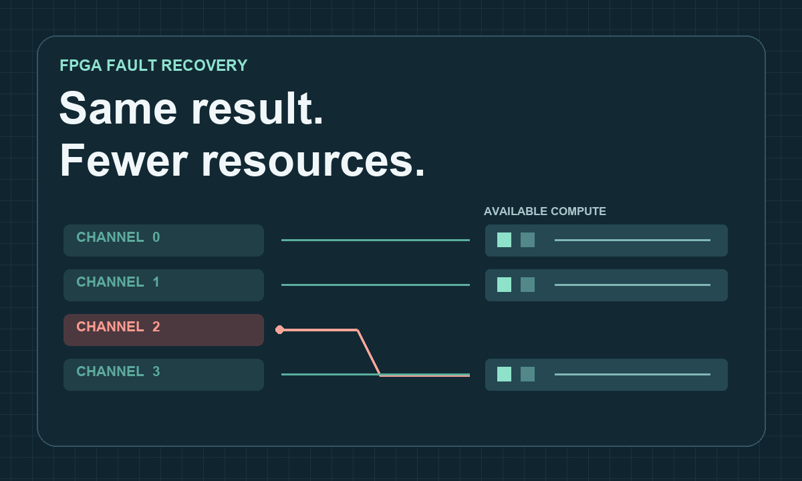

FPGA / Fault recovery
FPGA 自愈实验
如果一部分计算单元用不了了，能否用剩下的硬件算出原本的结果？我用可控故障研究 FPGA 电路怎样检测错误、调整结构，并用板上输出来检验恢复。
试试关闭一路乘法器 ↓
少一路，能算完吗？
四个乘法任务默认各占一路。关掉任意几路，再比较原分配和分时调度。这个简化模型展示任务重排的原理。
我在实验中看什么
故障会怎样暴露
比较正常和注入故障时的输出，观察程序是否会继续跑完却给出错误结果。
电路能改到什么程度
比较在剩余区域重新放置电路、切换备用电路、以及调整并行度和数据路径。
能否在板上恢复
检查候选设计的功能、资源和时序，再用实际应用的输出核对。也记录恢复功能需要付出的计算周期。